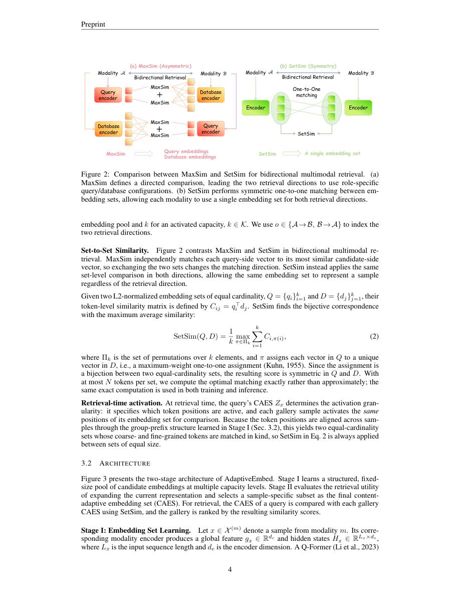

#1
★ 7/10
AdaptiveEmbed: Sample-Adaptive Multi-Vector Representation for Multimodal Retrieval
AdaptiveEmbed：用于多模态检索的样本自适应多向量表示

图 Figure · Page 4 of paper
🎯 自适应分配向量数量，让多模态检索更聪明更高效
AdaptiveEmbed dynamically assigns the right number of embedding vectors per sample for smarter multimodal retrieval.
🗣️ 一句话比喻 · Plain-English Analogy就像给旅行者打包行李：与其给所有人发同样大小的箱子（东西少的浪费空间，东西多的装不下），AdaptiveEmbed给每位旅行者恰好合适的箱子——短途旅行给个小背包，出国一个月给个大行李箱。每个内容都获得刚好够用的"描述空间"，既不多余也不欠缺，检索自然更准确。Think of it like packing bags for a trip: instead of giving everyone the same size suitcase (wasting space for light packers, not enough room for heavy packers), AdaptiveEmbed gives each traveler exactly the right size bag they need — a small backpack for a day trip, a big trunk for a month abroad. Each piece of content gets just enough "description space" to be found accurately.
| 维度 | 中文 | English |
|---|---|---|
| ❓ 待解决 的问题 |
当AI系统在图片、文字、视频和音频之间进行搜索时，它会把每个内容转成一组数字"指纹"（向量）。现有系统给所有内容分配完全相同数量的指纹——一张简单的照片和一段复杂的视频片段用的指纹数量一样多。这样既浪费资源，又让复杂内容的描述不够充分，导致检索效果变差。 | When AI systems search across images, text, videos, and audio, they represent each piece of content as a set of numerical "fingerprints" (vectors). Current systems give every piece of content the exact same number of fingerprints — a simple photo and a complex video clip both get the same budget. This wastes resources on simple content and under-serves complex content, hurting retrieval accuracy. |
| 💡 解决 的亮点 |
• 全新问题定义：首次提出SAMVR，研究如何根据每个样本的复杂度和检索需求，动态分配不同数量的向量表示。 • 智能容量决策：采用"边际效用分配"（MUA）——只要新增向量还能提升检索效果就继续加，一旦收益下降就停止，既不浪费也不欠缺。 • 统一学习框架：AdaptiveEmbed通过多组对比学习和集合相似度度量，训练出结构化、可比较的多向量表示。 | • Novel problem framing: Introduces SAMVR, the first formulation that studies how to allocate different numbers of embedding vectors to different samples based on their individual complexity and retrieval needs. • Smart capacity decision: Uses "Marginal Utility Allocation" (MUA) — it keeps adding vectors to a sample only as long as each new vector actually improves retrieval; once the benefit drops off, it stops. • Unified learning framework: AdaptiveEmbed trains structured multi-vector representations using Multi-Group Contrastive Learning and a set-to-set similarity measure, making the embeddings both structured and comparable. |
| 🧪 实验 内容 |
作者在涵盖图像、文字、视频和音频四种模态的多个多模态检索基准上测试了AdaptiveEmbed。对比对象包括固定容量多向量基线（每个样本向量数相同）和单向量嵌入方法。评估指标采用标准检索指标如Recall@K，衡量正确结果出现在系统返回的前K个结果中的频率。 | The authors tested AdaptiveEmbed on multiple multimodal retrieval benchmarks covering four modalities: image, text, video, and audio. They compared against fixed-capacity multi-vector baselines (where every sample gets the same number of vectors) as well as single-vector embedding methods. Evaluation was done using standard retrieval metrics such as Recall@K, measuring how often the correct item appears in the top K results returned by the system. |
| 📊 实验 结果 |
AdaptiveEmbed在所有测试的多模态基准（图像、文字、视频、音频）上，整体检索性能均优于固定容量多向量表示方法。结果验证了在样本层面动态分配表示容量比对所有样本使用统一预算更有效。在各基准的Recall@K指标上，自适应方法持续超越固定容量对照方法。（注：论文摘要未披露具体数字，完整数值详见论文正文实验部分。） | AdaptiveEmbed with sample-adaptive capacity allocation achieves overall better retrieval performance than fixed-capacity multi-vector representations across all tested multimodal benchmarks (image, text, video, and audio). The results validate that dynamically allocating representation capacity at the sample level is more effective than using a uniform budget for all samples. Specific numeric improvements are shown across Recall@K metrics on the tested benchmarks, with adaptive methods consistently outperforming their fixed-capacity counterparts. |
| 🏁 结论 | 本文证明：根据内容的复杂度和信息量，为不同内容分配不同数量的向量表示，比"一刀切"的固定分配方式能带来更好的多模态检索效果。AdaptiveEmbed确立了样本自适应多向量表示作为多模态搜索系统的一个可行且有效的新方向。 | This paper proves that giving different pieces of content different numbers of embedding vectors — based on how complex or information-rich they are — leads to better multimodal retrieval than the one-size-fits-all approach. AdaptiveEmbed establishes sample-adaptive multi-vector representation as a practical and effective new direction for multimodal search systems. |
| 🔗 论文 链接 |
arXiv: 2608.25412v1 · 📥 PDF | |
⚙️ Method · 方法详解
AdaptiveEmbed分两大步骤。第一步，通过多组对比学习把任何内容（图像、文字、视频、音频）转换成一组有层次的向量——就像训练AI为每个内容组建一支"描述团队"，每个新成员都补充了之前成员遗漏的信息。集合相似度函数通过比较两个内容的完整团队来衡量它们的匹配程度。第二步，通过效用策略优化，对每个样本单独决定需要多少向量。方法是测量"边际效用"——每多加一个向量能带来多少额外的检索收益。当新增向量的收益微乎其微时，系统就停止并锁定该样本的向量数量。这意味着一张简单自拍可能只需2个向量，而一段多场景复杂视频可能需要8个。
AdaptiveEmbed works in two main steps. First, it learns how to turn any piece of content (image, text, video, audio) into a structured set of vectors using Multi-Group Contrastive Learning — think of it as training the AI to create a ranked team of descriptors, where each new descriptor adds something the previous ones missed. A set-to-set similarity function then measures how well two content items match by comparing their full teams of descriptors. Second, it uses Utility Policy Optimization to decide, for each individual sample, how many vectors are actually needed. It does this by measuring the "marginal utility" — how much each extra vector improves retrieval. When adding another vector no longer helps much, the system stops and locks in that sample's representation size. This means a simple selfie might get 2 vectors while a complex multi-scene video might get 8.
📐 Key Formulas · 关键公式
\[\text{SetSim}(\mathbf{E}_q, \mathbf{E}_d) = f(\{\text{sim}(\mathbf{e}_q^i, \mathbf{e}_d^j)\}_{i,j})\]
💡 集合相似度（SetSim）：衡量两个内容的向量集合之间整体匹配程度的函数，通过比较两组向量中所有向量对的相似度来计算。
Set-to-Set Similarity (SetSim): A function that measures how well two sets of embedding vectors (one for query, one for document) match overall, by aggregating pairwise similarities between all vector pairs.
\[\text{MUA}(k) = \text{Utility}(k) - \text{Utility}(k-1)\]
💡 边际效用分配（MUA）：衡量新增第k个向量带来的额外检索收益。当MUA值低于阈值时，停止为该样本添加更多向量。
Marginal Utility Allocation (MUA): Measures the extra retrieval benefit gained by adding the k-th vector. When this marginal gain drops below a threshold, the system stops adding more vectors for that sample.
🌟 Why It Matters · 为什么重要
处理图像、视频和音频的搜索引擎及AI助手（如谷歌、抖音或语音助手）需要快速准确地将查询与正确内容匹配。AdaptiveEmbed更智能、更灵活的表示方法，有望在提升准确率的同时更高效地利用存储和计算资源，对性能和成本都是双赢。
Search engines and AI assistants that handle images, videos, and audio (like Google, TikTok, or voice assistants) need to match queries to the right content quickly and accurately. AdaptiveEmbed's smarter, flexible representation approach could make these systems more accurate while using storage and compute resources more efficiently — a win for both performance and cost.